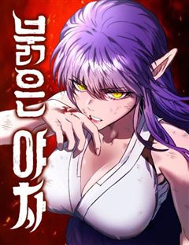
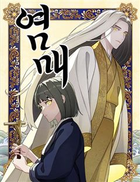

호랑이형님 같은 웹툰 추천

호랑이형님 · 이상규
호랑이형님 재밌게 봤다면 이 웹툰들도 좋아할 거예요. 같은 장르이면서 동양풍판타지, 동물, 세계관 같은 요소가 겹치는 작품을, 겹치는 요소가 많은 순서로 20개 골랐어요.
2026-10-01 기준 · 네이버웹툰·카카오웹툰·레진코믹스 · 성인 작품 제외
내 취향으로 직접 골라 추천받기 →-
1
 네이버웹툰
네이버웹툰사람의 탈
탈은 예술, 춤은 무술! 천대받는 탈춤광대 ‘봉산’은 스승이 남긴 지도를 따라 왕이 되려는 괴물 호랑이 ‘사풍흑호’를 막기 위해 전설 속의 '사람의 탈'을 찾아 모험을 떠나게 되는데 …
동양풍판타지동물판타지네이버웹툰에서 보기 → -
2

네이버웹툰붉은 야차
죽은 여동생의 복수를 하기도 전에 죽어버린 학폭 가해자들. 쓰레기들이 죽어서 갈 곳은 지옥밖에 없고, 주인공인 이성율은 그 지옥 끝까지 쫓아가 복수하기 위해 스스로 목숨을 끊는다.
동양풍판타지세계관판타지네이버웹툰에서 보기 → -
3
 네이버웹툰
네이버웹툰도원향
신과 안드로이드가 공존하는 이상향, 도원향. 도원향의 모든 것은 인간의 영혼으로 유지된다. 완전한 질서 아래 모든 것이 관리되는 세계. 유일하게 자아를 가진 안드로이드, ‘홍유선’은 점차 위화감을 느끼고 도원향의 시스템에 균열을 내기 시작하는데…
동양풍판타지세계관판타지네이버웹툰에서 보기 → -
4
 네이버웹툰
네이버웹툰화산귀환
대 화산파 13대 제자.천하삼대검수 매화검존 청명. 천하를 혼란에 빠뜨린 고금제일마 천마의 목을 치고 십만대산의 정상에서 영면. 백 년의 시간을 뛰어넘어 아이의 몸으로 다시 살아나다. ......뭐? 화산이 망해? 이게 뭔 개소리야!?
동양풍판타지세계관판타지네이버웹툰에서 보기 → · 화산귀환 같은 웹툰 → -
5
 네이버웹툰
네이버웹툰괴력 난신
살인에서 삶의 즐거움을 느끼는 '겸살귀', 정(正). 대 연목검장의 셋째공자 목경운과 똑같이 생긴 얼굴을 가졌는데... "나의 대역이 되어라. 그러면 옥에서 나갈 수 있게 해 주마." "그 기회. 제게 주시겠습니까?" '촤악-!!!' 셋째공자를 죽여…
동양풍판타지세계관판타지네이버웹툰에서 보기 → · 괴력 난신 같은 웹툰 → -
6
 네이버웹툰
네이버웹툰억만무림
6600만 년 전, 무공을 쓰는 공룡들이 살아가는 무림. 천마의 난 이후 혼란이 이어지는 가운데, 스승을 잃은 트리케라톱스 소년 벽뢰아는 숨겨진 무공과 천마의 진실을 찾기 위해 모험에 나선다. 거대한 음모와 대재앙의 비밀에 맞서며, 그는 공룡 무림의…
동양풍판타지동물판타지네이버웹툰에서 보기 → -
7
 네이버웹툰
네이버웹툰붉은 이정표
세상의 평화를 유지하던 최강의 도깨비 집단 '홍혜.' 그러던 어느 날 동료의 배신으로 도깨비 '린'은 홍혜와 친구들 모두를 잃게 된다. 분노로 가득 찬 그는 홍혜의 최강전력 '검은 귀신' 으로서 복수를 향해 길을 떠난다.
동양풍판타지세계관판타지네이버웹툰에서 보기 → -
8
 네이버웹툰
네이버웹툰천도박멸
17세 고등학생 박태웅, 모종의 일로 죽음을 겪게 된 그의 앞에 펼쳐진 일들은 그의 인생의 판도를 뒤흔들어 놓는 굉장한 사건들이 된다.
동양풍판타지세계관판타지네이버웹툰에서 보기 → -
9
 네이버웹툰
네이버웹툰곤륜에 용이 산다
한때 구파일방 중 하나였던 곤륜파의 제자가 된 교하. 사제들과 함께 곤륜파를 재건하기 위해서 고군분투한다. 근데, 뭔가 좀 이상하다. 제자들이 거지에 산적, 사기꾼에 도둑 출신이라고? 이거… 정파 맞나?
동양풍판타지세계관판타지네이버웹툰에서 보기 → -
10
 네이버웹툰
네이버웹툰모닥불 친구들
어느 날 추억의 애니메이션 '모닥불 친구들' 세상으로 쏙 들어가 버린 회사원 채수! 평화로운 숲속에서 귀여운 동물 친구들과 놀며 잃어버린 동심을 되찾아가는데.. 사실 그들의 친절에는 섬뜩한 비밀이 숨겨져 있다!? 귀엽지만 오싹한 동심 가득 판타지 호…
동물세계관판타지네이버웹툰에서 보기 → -
11
 네이버웹툰
네이버웹툰염라강림
지옥이 망했다. 피가 흘러야 할 황천에는 맑은 물이 흐르고 망자들을 끓이던 솥은 차갑게 식은지 오래다. 은퇴한 염라대왕은 자신의 행복을 위해 윤회의 길을 택하고자 하지만, 혼란스러워진 지옥과 사라진 자신의 후임 털보로 인해 윤회의 길을 걸을 수 없게…
동양풍판타지판타지네이버웹툰에서 보기 → -
12
 네이버웹툰
네이버웹툰조선야차
"조선의 개가 되어라, 어명이다." 한순간에 깨진 평화. 왕의 부름에 야차가 된 두 사람, 얘네한테 조선의 운명을 맡겨도 되는걸까...?
동양풍판타지판타지네이버웹툰에서 보기 → -
13
 네이버웹툰
네이버웹툰나 혼자 탑에서 농사
어느 날 갑자기 도시에 나타난 정체불명의 탑. 사람들은 그곳을 던전이라고 부르기로 했다. 그리고 그곳은 험한 지형과 위험한 몬스터들로 가득했지만 수많은 보물이 기다리는 기회의 땅이기도 하다. 평범한 삶을 살고 있던 청년 세준은 우연한 기회로 던전에…
동물판타지네이버웹툰에서 보기 → · 나 혼자 탑에서 농사 같은 웹툰 → -
14
 네이버웹툰
네이버웹툰바리, 별을 깨운 천둥
태어나자마자 버려진 독심술사 소녀, 바리. 세상의 저주 속에서 스스로를 요괴라 믿게 된 그녀 앞에 요괴 잡는 사냥꾼, 무 우레가 나타난다.“넌 요괴가 아니야. 난 네가 필요해.” 그 말을 믿은 순간, 운명이 깨어났다. 저승과 인간 세계를 잇는 길,…
동양풍판타지판타지네이버웹툰에서 보기 → -
15

네이버웹툰염매
"염매 처리 전문 참새투어입니다." 어느 날 염매를 잡는다는 수상한 회사에 입사하게 된 주인공 백한. 생명을 먹이로 한다는 인간이 과거에 만들어 낸 괴물 염매. 인간의 생명을 노리는 염매가 전국 곳곳에 숨어 있다는데, 염매를 잡기 위해 설화와 전설을…
동양풍판타지판타지네이버웹툰에서 보기 → -
16
 네이버웹툰
네이버웹툰땅의 기록
야매로 요괴를 퇴치하며 살아가는 반가이. 그러던 어느날 실도깨비가 나타나 대뜸 의뢰를 한다. "내 동생인 숲지기를 찾아줄 이를 구하고 있어" 소원을 들어주는 조건으로 의뢰를 받아들이지만, 숲지기를 찾는 과정에서 벌어지는 사건들이 반가이의 어린 시절과…
동양풍판타지판타지네이버웹툰에서 보기 → -
17
 네이버웹툰
네이버웹툰신수 유치원
하루하루 근근이 살아가던 소시민, 서민우. 어릴 때 자신을 버리고 떠난 어머니의 유산을 물려받게 되는데, 그 유산은 바로. “신수 유치원?” 호랑이, 토끼, 고양이, 뱀, 거북이, 양까지 다양한 신수 아이들이 다니는 유치원이라니. 그리고 그의 눈앞에…
동물판타지네이버웹툰에서 보기 → -
18
 네이버웹툰
네이버웹툰밥먹고가라
이세계에 소환되어 마왕과의 싸움 끝에, 마왕을 해치운 최강의 사나이 강철호. 30년 만에 귀환해 돌아온 지구는 레이드의 시대. 강철호는 반복되는 싸움에 지쳤고, 더 이상 싸우고 싶지 않다. 그래서 예전의 꿈이었던 식당을 열어 조용히 살고자 한다. 식…
동물판타지네이버웹툰에서 보기 → -
19
 네이버웹툰
네이버웹툰김오진과 이상한 동물들
드래곤에게 강제 소환 당한 수의사 김오진. 드래곤의 반려 동물을 성공적으로 진료하고 귀가하였으나 도착한 곳은 이세계였다. 이세계 동물도 동물인데? 현실에서 파산직전 수의사인 내가 이세계에서는 명의? 이렇게 된 이상, 폐업직전의 본점을 두고 2호점으로…
동물판타지네이버웹툰에서 보기 → -
20